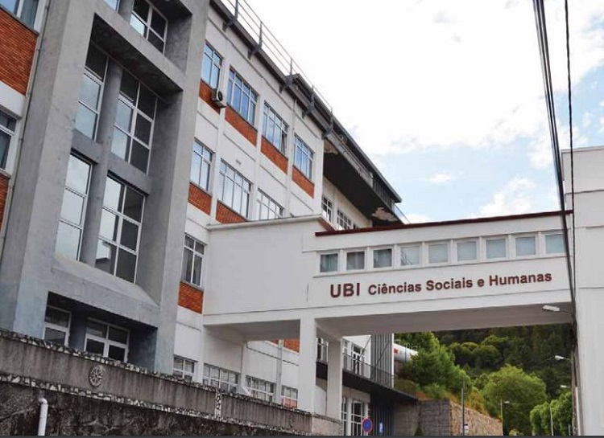

Erasmus in Covilha
Erasmus in CovilhaFaculty of Social and Human Sciences
Built in the former factory of Ernesto Cruz, as it is known among students and the population of Covilhã, Campus IV houses the Department of Management and Economics, Department of Psychology and Education, Department of Sociology and also the Department of Sports Science which is located in Campus II. Equipped with the latest technology, this faculty focuses on internal and external communications through its Internet sites allowing prospective students know “their” new school, including the teaching structures and research, the offer particularly to current and future national and international partners, and overview of the activities that are developed. It is a priority for this faculty the promotion of teaching process and intercultural learning increasing student’s involvement in researching since the early years. Simultaneously, it creates and fosters opportunities for internships and learning opportunities in the entities with which it has established protocols for cooperation in region, in country and abroad too.
The Social and Human Sciences Faculty is working to position its self properly to meet the challenges of the 21st century, particularly working the transversal abilities and qualities of its students and teachers. We train leaders in the several areas of our intervention, particularly in emerging areas of education. We have intensifi ed also the presence of foreign teachers in our teaching and research activities, as well as our teachers have cooperated in the activities of other national and international universities, enhancing opportunities for interdisciplinary doctoral programs.
This Faculty has been working with their students to remove working tendencies from the past that stops creativity, by encouraging critical analysis and monitoring of learning processes of their operation and has invested continually in new technology education. The Faculty of Social and Human Sciences includes two R & D (Research and Development) units, Research in Sport Center, Health and Development (CIDESD) and the Studies in Business Center (NECE), which develop projects approved and fi nanced by FCT. The Social and Human Sciences Faculty is now a benchmark in its areas of action, bringing together the best conditions for learning, teaching and research.